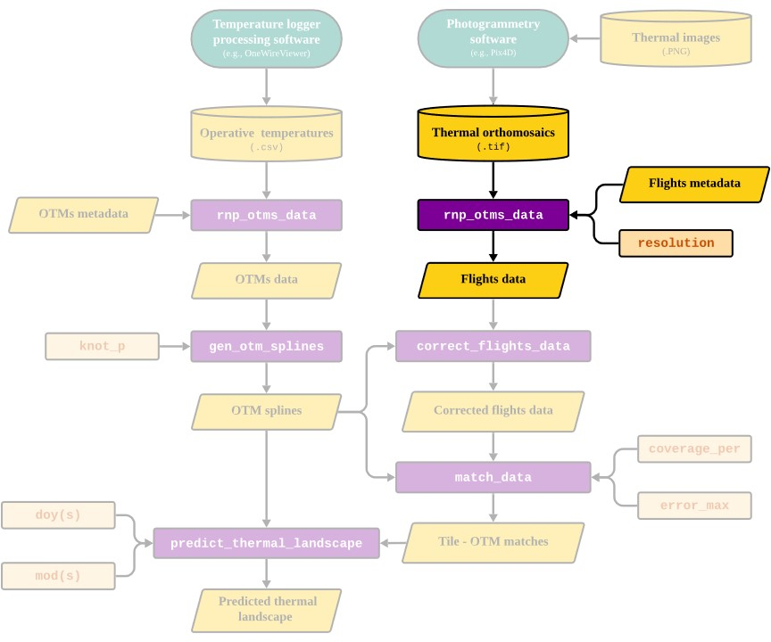

Reading and processing flight data
rnp_flights_data.RmdOverview
The goal of this vignette is to illustrate the process behind the
rnp_flights_data (read
and process flights data) function of
the throne package. This function enables processing of raw
.tif files obtained by combining images collected during a
drone flight (see the Flying
drones and obtaining thermal orthomosaics vignette) into a data
frame structure easily manageable in R. This data frame
will later be related to operative temperature model
(OTM) data to finally predict thermal landscapes.
Below, we highlight the section of the package’s workflow that is
covered in this vignette:

Next, we present how the rnp_flights_data function works
by discussing it’s inputs, processes and output
Inputs
The rnp_flights_data takes in 3 inputs:
The
pathto the directory where all thermal orthomosaics (i.e.,.tiffiles) for flights are stored.A
data.framewithmetadatafor each flight. Thisdata.framemust contain specific columns indicating theflight_id, thedatewhen the flight took place and the times at which the flight started and ended. For more specific information please check the function’s documentation here. Below is an example data set included withthroneillustrating how themetadatashould be structured:
## flight_id date time_start time_end
## 1 VAL2_01 8/24/2023 8:35 8:39
## 6 VAL2_06 8/24/2023 10:38 10:42
## 7 VAL2_07 8/24/2023 10:57 11:01
## 8 VAL2_08 8/24/2023 11:20 11:24
## 11 VAL2_11 8/24/2023 12:21 12:25
## 12 VAL2_12 8/25/2023 10:27 10:31
## 13 VAL2_13 8/25/2023 10:49 10:53
## 25 VAL2_25 8/26/2023 15:26 15:30
## 27 VAL2_27 8/26/2023 16:16 16:20
## 30 VAL2_30 8/26/2023 17:31 17:35- The spatial
resolutionto which the.tiffiles should be summarized to in \(m^2\). This parameter will control the spatial resolution of the final output and should be chosen according to the spatial scale of the study organism. The lower boundry for spatial resolution is set to \(0.5 m^2\) and while there is no upper boundry we recommend users to setresolutionto a value that is not larger than the area they are studying.
Processes
To transform the original .tif files, the
rnp_flights_data goes through the following steps for all
.tif files specified:
Read each specified
.tiffile as a as a raster object using therastfunction from theterrapackage.Re-scale the resolution of the raster object to the desired spatial
resolutionusingterra’saggregatefunction.Transform the raster object into a
data.frame.Add metadata information, including the
year, day of the year (doy) and minute of the day when the flight started (mod_start) and ended (mod_end).
NOTE: Working
doyandmodallows the user to work with numeric colums. This simplifies the management of the data, as dates and times have unique data formats in theRenvironment that are often difficult to handle and may lead unintended errors. Nonetheless, these formats can be transformed back into more interpretable temporal scales for visualization purposes, by using theas.Datefunction to transformdoy(also known as Julian date) back into a YYYY-MM-DD format and dividing by 60 formodto get hours.
Output
The final output of rnp_flights_data is a
data.frame with the following columns:
-
xandy: UTM coordinates. -
year,doy,mod_start,mod_end: The year, day of the year, minute of the day when the flight started and ended respectively. -
surf_temp: Surface IR-measured temperature (°C).
Thus, each row on the data.frame will correspond to a
unique surf_temp measurement on a particular
tile (a unique x and y
combination) within a specific flight. The number of rows will in turn
depend on 1) the number of flights processed and 2) the desired spatial
resolution.
Below is an example data set showing how the output of
rnp_flights_data should look like:
## x y surf_temp year doy mod_start mod_end
## 75 275330 4416550 25.82156 2023 236 515 519
## 76 275331 4416550 25.08232 2023 236 515 519
## 77 275332 4416550 23.77567 2023 236 515 519
## 78 275333 4416550 24.48907 2023 236 515 519
## 79 275334 4416550 19.89712 2023 236 515 519
## 80 275335 4416550 10.46925 2023 236 515 519These data can already be processed to visualize and quantify the
thermal characteristics of a study site. Below we illustrate how to
visualize this data using ggplot2 and 4 of the 10 fully
processed flights (with a spatial resolution of \(1m^2\)) we include in the
flights_data example data set that is included with
throne. Panel titles indicate the hour in which the flight
took place.
flights_data |>
filter(mod_start %in% c(515, 680, 926, 1051)) |>
filter(surf_temp > 12) |>
mutate(hour = round(mod_start/60)) |>
mutate(hour = paste(hour,":00 h", sep = "")) |>
ggplot(aes(x = x, y = y, fill = surf_temp)) +
geom_raster() +
scale_fill_viridis("Surface temperature (°C)", option = "magma") +
facet_wrap(~ fct_reorder(hour, mod_start)) +
xlab("Longitude") + ylab("Latitude") +
theme_void() +
theme(strip.text = element_text(size = 12),
legend.position = "top")
Choosing the appropriate spatial resolution
The rnp_flights_data function allows the user to specify
the spatial resolution to which the .tif files
should be summarized to. This parameter controls the spatial resolution
of the final output and should be chosen according to the spatial scale
of the study organism. We leave it up to the user to determine the
appropriate spatial resolution for their system but we consider it
important to highlight that a greater resolution will
result in a longer processing time in all subsequent steps. To choose
the appropriate resolution for their data, we recommend that users run
rnp_flights_data at multiple spatial resolutions and
visualize the output. Below is a plot illustrating one of the flights we
include in throne as an example processed at 0.5, 1 and 5
\(m^2\) of spatial resolution:
Next, we will present how the throne package can read
and process OTM data and generate OTM and date specific spline
models.